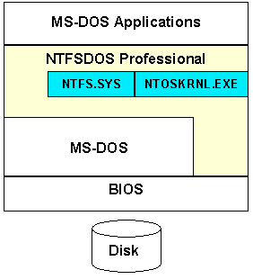

If you are interested in accessing NTFS drives from Windows 95 or Windows 98 you should use NTFS for Windows 98 rather than NTFSDOS Professional, which is available as part of Winternals Administrator's Pak. If you want to salvage files off a corrupt NTFS volume or repair an NTFS boot sector or partition table, see Winternals' Disk Commander, also part of the Administrator's Pak
NTFSDOS Professional mounts your NTFS volumes and gives them drive letters, so you can run applications and use files on NTFS volumes transparently. NTFSDOS Professional is small enough to run from a MS-DOS boot diskette so you can even access NTFS volumes on a system where Windows NT/2000/XP isn't installed or able to boot. This makes it ideal for repairing corrupt files or configuration problems that prevent a Windows NT/2000/XP system from booting.
The advantage NTFSDOS Professional has over NTFSDOS is that it relies on Microsoft's implementation of NTFS rather than our own information on the NTFS file-system layout. However, NTFSDOS is still sometimes useful for cases where you want to recover data off of a NTFS drive that Windows NT/2K no longer recognizes, because NTFSDOS is more lax about recognizing NTFS drives than the Windows NT/2K NTFS driver.
NTFSDOS Professional also comes with NTFSCHK, a tool for running the Windows NT/2000/XP CHKDSK program from within MS-DOS. NTFSCHK allows you to verify and repair the NTFS disk structure in case of accidental corruption.
Please read this entire file before contacting us for help.
NTFSDOS Professional runs on MS-DOS and mounts NTFS drives so your MS-DOS applications can use them. It takes the files and drivers that compose NTFS from an existing Windows NT/2000/XP installation and simulates the environment they normally run in, allowing them to run inside of MS-DOS. This approach allows NTFSDOS Professional to access your NTFS volumes using the same Microsoft drivers that Windows NT/2000/XP uses, ensuring compatibility with your NTFS drives regardless of the version and Service Pack of NT you happen to use.
NTFSDOS Professional is a 32-bit application that uses the DOS Protected Mode Interface (DPMI) to allow it to run in the 16-bit MS-DOS environment. It implements a network file system redirector, allowing the programs on your system to think they are making requests to a network drive, when in fact the requests are being routed to the NTFS file system driver and then to your local hard disk.
Installing NTFSDOS Professional is a two-step process. The first step is installing the configuration utility and help files on a Windows NT system, and the second step is creating your MS-DOS disks with the necessary Windows NT/2000/XP drivers. (If you ran a setup program to install this Help file then the first step is already done.)
When you first receive NTFSDOS Professional you will want to run the Setup program on the Windows NT/2000/XP workstation or server that you wish to have the help files installed on, and that you wish to use to create NTFSDOS Professional diskettes. If you are installing on a dual-boot Windows NT/2000/XP and MS-DOS/Win9x system then you should run the Setup program on Windows NT/2000/XP.
Once installed, you can run the Creator utility to place NTFSDOS Professional and the Windows NT/2000/XP system files it requires on either your local disk(s) or a MS-DOS diskette.
You must have the following components in order to install and run NTFSDOS Professional:
You must run the Creator program in order to create disks from which you wish to run NTFSDOS Professional. You can create regular diskettes, bootable diskettes, or hard disk installations. You can use a single diskette on any number of systems, but note that the version of NTFS might vary from one machine to the next depending on the version of Windows NT/2000/XP installed.
When creating a bootable diskette you can add MS-DOS to the diskette either before or after installing NTFSDOS Professional on it. You can create a MS-DOS 7.0 boot diskette from within Windows 95/98 using either the "FORMAT /S A:" command or "SYS A:" from the command prompt.
The Creator program is installed in the program group where you installed NTFSDOS Professional. When run, it will take you through the following configuration screens:
Once you have run Creator you are ready to boot into MS-DOS and begin using NTFSDOS Professional.
To start NTFSDOS Professional, simply execute it from the DOS command line or from your AUTOEXEC.BAT. NTFSDOS must be started from the directory that contains its support files. When NTFSDOS Professional starts it will scan all hard-disk partitions on your system looking for NTFS drives. It will mount each NTFS drive it finds with a unique DOS drive letter.
Once the NTFS drives are mounted you can treat them just as you do any other drive on your system.
NTFSDOS Professional indicates the locations of the partitions it mounts using the BIOS unit number and partition. The unit, starting at 80, indicates the physical hard disk, while partitions are numbered sequentially on each unit starting at 1. The screenshot indicates that NTFS volumes were found on the 3rd partition of the first disk, and the 1st partition of the second disk.
You can specify your time zone by either using the /T command line option ("/T-5:00") or by setting the "TZ" environment variable ("TZ=-5:00"). The general form of the time zone specification is [+|-]hh[:mm[:ss]] where hh is hours, mm is minutes and ss is seconds.
It may not be important to you to set the time zone information before using NTFSDOS Professional, but remember that file times will be reported to you up to 12 hours off their actual times, and when you boot back into Windows NT/2000/XP any files you have modified will similarly have incorrect time stamps.
NTFSDOS Professional supports long file names, just as Windows 95/98/NT/2000/XP do. Long file name support was introduced to MS-DOS in version 7.0 (the version released with Windows 95), so if you use MS-DOS 7.0 you will see your Windows NT/2000/XP files with the regular names, rather than the 8.3 names. If you use an earlier version of MS-DOS you can still access your files, but you will need to use names like "PROGRA~1" rather than "Program Files".
Many people believe that MS-DOS doesn't support long file names at all, but that isn't the case. It is the MS-DOS FAT file system driver that lacks support, rather than MS-DOS itself. When used with a file system that supports long file names MS-DOS handles them fine, as do MS-DOS applications that are written to take advantage of the support.
The result of this situation is that if you copy a file with a long file name from NTFS to a local FAT drive, you will lose the long file name. However, if you copy it to a network drive that supports long file names, or to another NTFS drive, the long file name will be preserved. Similarly, if you use an archiver (such as one of the ZIP compressors) that supports long file names on an NTFS drive, the long file name information will be preserved.
The performance of NTFSDOS Professional is surprisingly good, considering that it runs on MS-DOS. NTFSDOS Professional is a 32-bit protected mode program, which means that the code usually executes at the same rate as for programs running under Windows NT/2000/XP and Windows 95/98. NTFSDOS Professional is not as fast as Windows NT/2000/XP overall, however, because it must switch back to 16-bit mode in order to interface to MS-DOS and the BIOS, to access the disk, and to interact with other applications.
NTFSDOS Professional implements its own disk cache for use when accessing NTFS volumes. You can increase the size of the disk cache in order to increase performance by using the /C option ("/C2000" sets the cache to 2000KB). The cache uses a write-through policy, meaning that while data read from the disk is served from the cache (if available), data written to disk is always committed to disk immediately. This is done to minimize loss of data in case of a crash.
NTFSDOS Professional is capable of using up to 64MB of physical memory for caching and other operations.
You can change the default behavior of NTFSDOS Professional by specifying one or more command line options. NTFSPRO.EXE understands the following options:
NTFSCHK is the second component of NTFSDOS Professional. NTFSCHK allows you to run the Windows NT/2000/XP CHKDSK program from MS-DOS.
You cannot run NTFSCHK while NTFSPRO is running. If you need to run NTFSCHK after starting NTFSPRO you must reboot before doing so.
You run NTFSCHK by simply specifying the drive you wish to check, for example "NTFSCHK E:". By default NTFSCHK runs in read-only mode, just as the regular CHKDSK does. If you wish to have NTFSCHK repair errors it finds, use the /F (fix) option. If you wish to check all drives on the system you can specify "*" as the drive letter.If you aren't certain what drives are available you can use the /S option to get a list of drives.
You can change the default behavior of NTFSDOS Professional by specifying one or more command line options. NTFSCHK.EXE understands the following options:
If you encounter a problem while running NTFS Professional, please determine if it is reproducible, and if so, how. Send steps on reproducing the problem and the following configuration information to support@winternals.com: